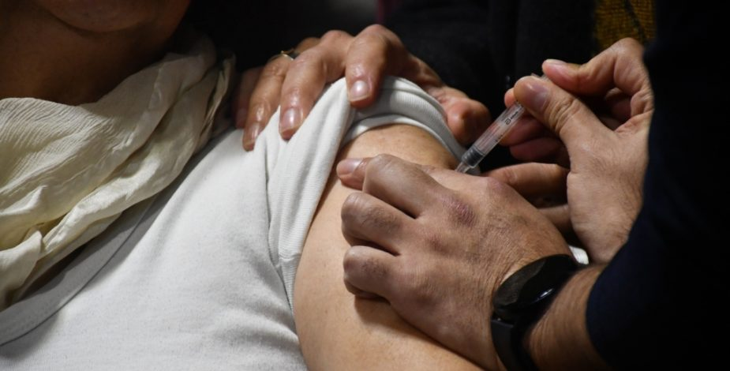
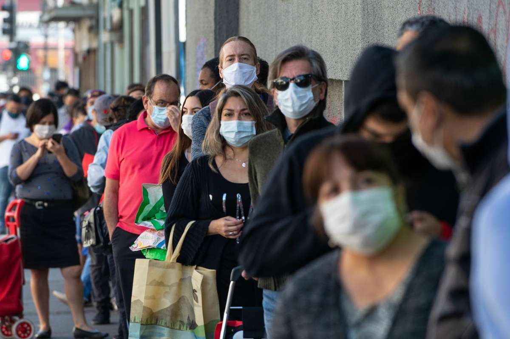

“Tenemos coronavirus para mucho rato”: broncopulmonar recalca importancia de vacuna covid anunciada por Minsal
“No hay que llamar al pánico”

En la entrevista realizada al broncopulmonar de Clínica Dávila, Felipe Rivera, quien destacó la importancia de mantener la vigilancia frente al coronavirus, incluso en las estaciones más cálidas del año.
“No hay que llamar al pánico, la gran mayoría son cuadros respiratorios agudos, pero gracias a Dios no hemos visto llenarse las UCI. El covid pasó de ser a una pandemia a una enfermedad endémica” afirmó el médico.
En cuanto a la nueva vacuna, el especialista explicó que se trata de una respuesta a las mutaciones del virus. “Esta vacuna se aprobó por la FDA en septiembre (…) creo que somos uno de los primeros países de Latinoamérica en empezar a colocarla”.
En cuanto a la población objetivo para la vacunación, se destacó que los adultos mayores, especialmente aquellos mayores de 60 años con condiciones de salud subyacentes, son prioritarios. También se incluyen personas con enfermedades crónicas, inmunosuprimidos, y mujeres embarazadas.
“Tenemos coronavirus para mucho rato”

Respecto a la duración de la protección de la vacuna, el broncopulmonar recomendó la aplicación para aquellos que hayan cumplido al menos un año desde su última revacunación con la vacuna bivalente. También se indicó que aquellos que no hayan recibido ninguna vacuna pueden ser candidatos para esta nueva inmunización.
A pesar de la aparición de la nueva vacuna, Rivera enfatizó que la precaución y las medidas preventivas siguen siendo esenciales. El uso de mascarillas, el lavado de manos y el distanciamiento social son prácticas que deben mantenerse.
“Tenemos coronavirus para mucho rato (…) Tenemos que aprender a vivir con el covid-19 y adaptarnos a las medidas preventivas”, cerró el broncopulmonar.